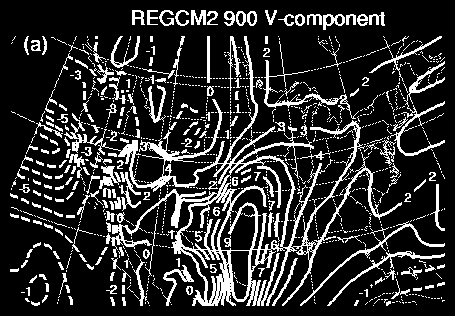

Here is the time-averaged (60 days) 900 mb v-component from the RUC and six RCMs that participated in PIRCS1a and PIRCS1b.
The wind field is computed by exactly the same method for each of the RCMs. The wind component is interpolated vertically by a log-linear function. Grid points for which 900 mb lies below the surface are flagged as missing. Horizontal interpolation onto a standard half degree lat-lon grid is accomplished by a variant of the Barnes scheme, although I haven't masked the terrain that is above 900 mb the wind values at those grid points are not included in the horizontal interpolation.
What I notice is that the RUC wind fields are smoother and contain smaller local maxima. This is also true for the u-component. And, this is consistent with previous diagnostics of the vertically integrated meridional moisture flux in ruc_orig.html and ruc.html. It looks like to me that the problem is in the wind field, in particular the low-level wind field, since the 500 mb geostrophic height field is not that abnormal (bias is less than 1% of the actual and not any larger than any of the other RCMs).
